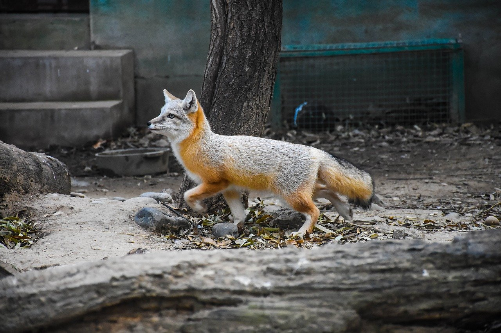

Everything about Foxes
By Arnab
Join our Mailing List!
|
Photos |
Descriptions |
Link to Information |
 |
The red fox, which is a cousin to the dog, is common across Minnesota. A careful eye may even spot one in theTwin Cities and surrounding suburbs. |
National Geographic website |
 |
The black fox is a genetic variation of thered fox and is very rare. |
Safari LTD |
|
 |
The grey fox is a salt and pepper grey color with a long bushy tail with a black stripe on top |
Wildlife Science Center |
| This table is designed and constructed by Arnab |